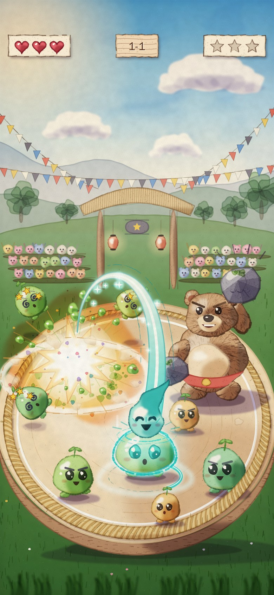
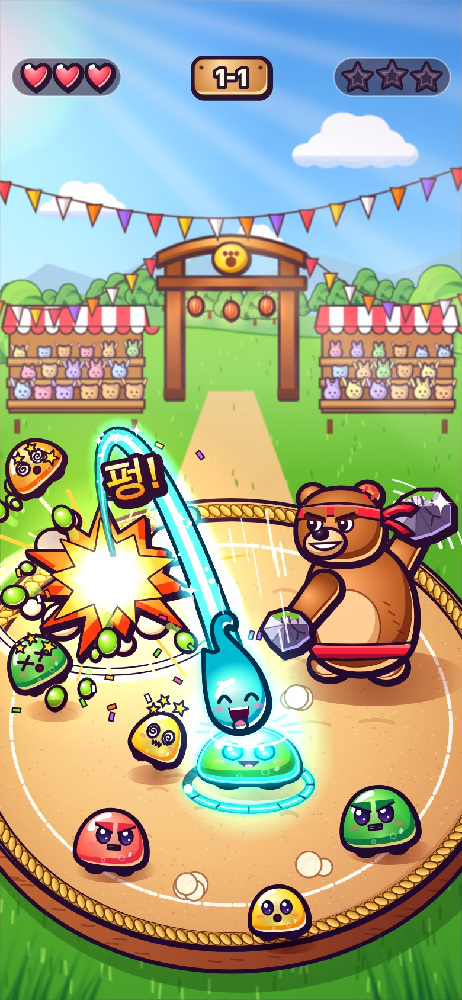
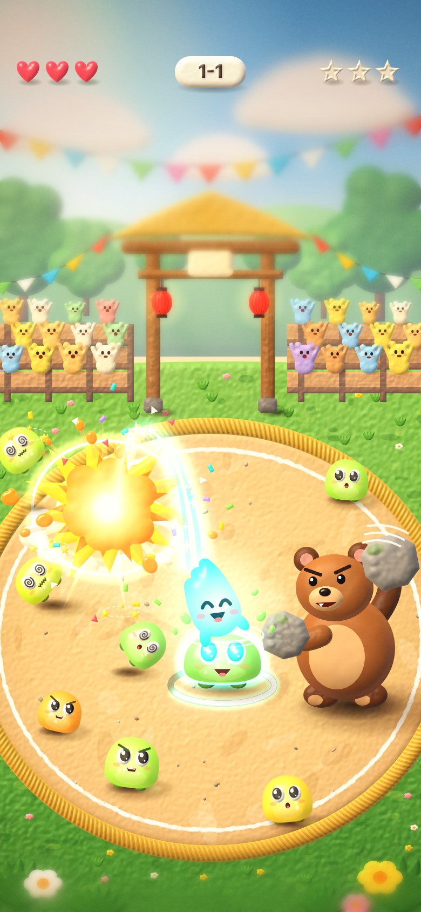

아침 햇살 속 종이에 번진 수채 물감 — 손으로 그린 동화책 같은 장면.

굵은 외곽선과 반짝이는 젤리 광택, 터지는 효과선 — 고급 TV 만화영화풍.

손으로 빚은 점토 인형 미니어처를 진짜 카메라로 찍은 듯한 말랑한 입체 장면.
같은 장면을 세 가지 그림으로 그렸어요: 첫 판, 유령이 슬라임 몸에 쏙 들어가는 순간 — 뒤에서는 버린 몸이 펑!, 오른쪽에는 다음에 탈 돌주먹 곰.
아이폰 세로 화면 크기 그대로예요. 그림을 누르면 크게 보여요. 1·2·3 중 어느 그림으로 갈까요?

아침 햇살 속 종이에 번진 수채 물감 — 손으로 그린 동화책 같은 장면.

굵은 외곽선과 반짝이는 젤리 광택, 터지는 효과선 — 고급 TV 만화영화풍.

손으로 빚은 점토 인형 미니어처를 진짜 카메라로 찍은 듯한 말랑한 입체 장면.